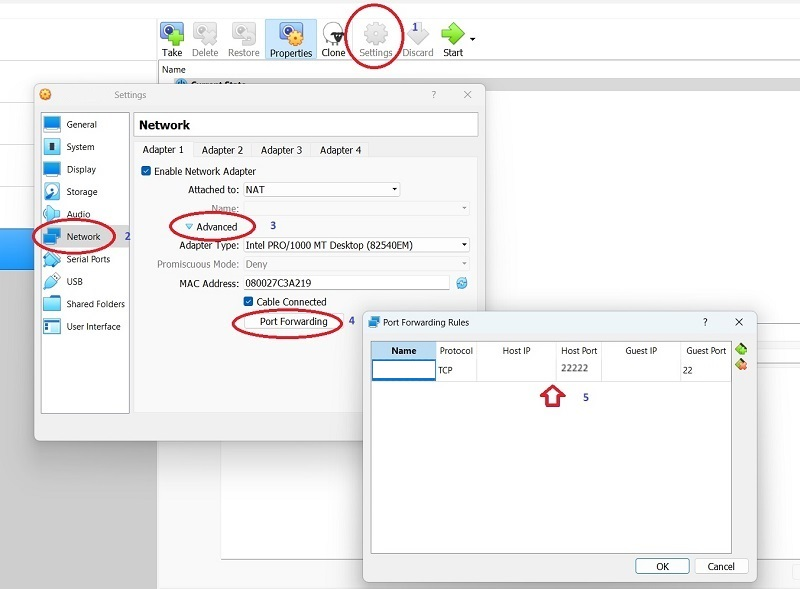
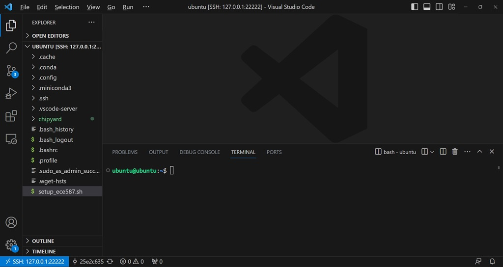
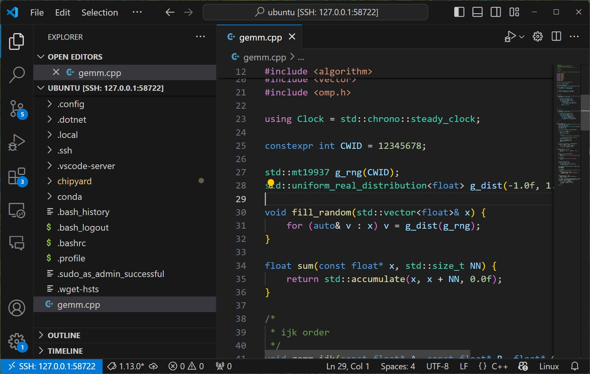

General Matrix Multiplication (GEMM) is one of the most fundamental building blocks of today's computational workloads. To help us understand the methodology of hardware/software co-design better, we will utilize a series of 4 projects to implement, analyze, and optimize GEMM operations on a variety of software and hardware platforms.
In this first project, we will establish a baseline for GEMM operaions using a single core of a general purpose CPU. We will explore different loop orderings to observe and analyze how different cache access patterns impact running time. It demonstrate the importance of evaluating both computation and communication to optimize a computing system consisting of both hardware and software.
For convenience, we utilize a virtual machine (ECE 587 VM Appliance) to support our computational needs for most of our projects. Since many libraries and tools are available as x64 binaries only, our ECE 587 VM Appliance only runs in VirtualBox on a recent Windows computer with at least 4 CPU cores, 16GB memory, and 512GB SSD. If you are using ARM-based computers (Apple MacBooks, Raspberry Pi's, etc.) or your computers are more than 5 years old, please considering to buy a Windows computer as mentioned earlier. If you are not considering buying a new computer, but are familiar with linux server administration and cloud computing, you may rent a x64 Ubuntu server from cloud providers and follow the instructions at the end of this section. Please be advised that we are not responsible for any cost incurred and we cannot provide support for any tech issues.
Install the most recent version of VirtualBox on your Windows computer. You will need to turn on hardware virtualization if you haven't done so already.
Download our ECE 587 VM Appliance IIT-ECE587-U24.ova and double-click to install/import. Make sure the file is downloaded completely with the size of 12,253,852,160 bytes and verify the integrity if possible.
Choose the installed VM and click 'Settings' to bring up the 'Settings' window. Choose 'Network' and 'Expert'. Choose 'Adapter 1' and click 'Port Forwarding' to bring up the 'Port Forwarding Rules' window. You should be able to see an entry for 'Protocol' TCP that maps 'Guest Port' 22 to 'Host IP' 127.0.0.1 and 'Host Port' 58722. If not, you should setup the rule by yourself.

Start the VM. After a while, it would display the login screen. While you could login here with username 'ubuntu' and password 'iitece', please proceed to III. Access Ubuntu Server via SSH in Visual Studio Code as that is much more convenient.
Alternatively, if you are familiar with linux server administration and cloud computing, you may use a Ubuntu server instance rented from a cloud provider. Please follow the instructions below but be advised that we are not responsible for any cost incurred and we cannot provide support for any tech issues. In addition, you will be required to use our ECE 587 VM Appliance if issues persist.
ubuntu@ubuntu24:~$ gcc --version gcc (Ubuntu 13.3.0-6ubuntu2~24.04) 13.3.0 Copyright (C) 2023 Free Software Foundation, Inc. This is free software; see the source for copying conditions. There is NO warranty; not even for MERCHANTABILITY or FITNESS FOR A PARTICULAR PURPOSE.
ubuntu@ubuntu24:~$ sudo apt-get update [sudo] password for ubuntu: Get:1 ... ... Reading package lists... Done ubuntu@ubuntu24:~$ sudo apt-get install build-essential -y Reading package lists... Done ... 0 upgraded, ...
Visual Studio Code (VS Code) is a code editor that can be extended into a powerful IDE by third-party extensions. It allows you to access local VMs and remote servers for development and management using your your favorite computer and OS. Download VS Code and install as necessary. Follow this link to install the widely used "Remote - SSH" extension, or you can start VS Code and search for it in the Extensions panel from the left.
Click the "><" button at the lower left corner to access remote window options in VS Code. Choose "Connect to Host..." and then enter "ubuntu@127.0.0.1:58722" for our ECE 587 VM Appliance. A new VS Code window will open and asks you to confirm the fingerprint and then the password. Once you type the password 'iitece', you will be connected to the VM. For the Ubuntu server setup, you should instead use the actual IP address and port, as well as the correct username/password combination.
You can now access files by opening a folder and execute commands by opening a terminal (... -> Terminal -> New Terminal). Sometimes you will need to type the password again.

It is a good time to go through "Basic Linux usage: Chapter 1 to 8" from Linux Tutorial if you are not familiar with Linux systems. In the terminal, commands can be pasted by a right-clicking and texts can be copied by selecting them.
Our sample C++ code for General Matrix Multiplication (GEMM) is available here on GitHub gemm.cpp. You may use git to clone this repository directly into the VM, or download and then upload it to the VM in VS Code. Now you should be able to open the C++ file 'gemm.cpp' on the VM in VS Code.

Our code 'gemm.cpp' provides two different implementations for matrix multiplication as well as many supporting routines for measuring and reporting correctness and time. Without modifying any code, build and run the 'gemm' program to ensure that everything works properly as follows:
ubuntu@ubuntu24:~$ g++ -O3 -march=native -fopenmp -std=c++17 gemm.cpp -o gemm ubuntu@ubuntu24:~$ ./gemm 1024 CWID A12345678 1768603680 N = 1024, 4 MiB per matrix CWID A12345678 1768603690 gemm_ijk : min 4933.148 ms, avg 5098.247 ms, max 5402.133 ms CWID A12345678 1768603695 gemm_ikj : min 210.093 ms, avg 213.240 ms, max 215.989 ms CWID A12345678 1768603696 sums: min 10144.962, max 10144.978, passedAs you can see, the first 'g++ ...' command compiles and builds the 'gemm' program, and then the second './gemm 1024' command tests with 1024 by 1024 matrices.
Taking a closer look into the code, you should be able to identify two functions 'gemm_ijk' and 'gemm_ikj'. These two functions look very similar but use different orderings of the loops. The running times are very different. Why?
While we will answer that question in our lectures, it is time to modify the code. First, on line 25 it says 'constexpr int CWID = 12345678;'. You should change it to your own CWID (8 digits only without the leading 'A' letter). Without making any further change, build and run 'gemm' to make sure you understand the iterations to modify code, build program, and run it.
For this project, you will need to implement another loop ordering among the remaining four (jik, jki, kij, kji) as a function and modify the 'main' function to test it together with 'gemm_ijk' and 'gemm_ikj'. Make sure your implementation is correct ('passed' instead of 'failed'). Run the 'gemm' program with matrix sizes of 256, 512, 1024, 2048, 4096, 8192 (you may skip 4096 and 8192 for your implementation if it runs too slow). Collect screenshots to prepare for the project report.
Submit a project report in .doc/.docs or .pdf format to Canvas before the deadline for a total of 15 points. Your project report should include the following.